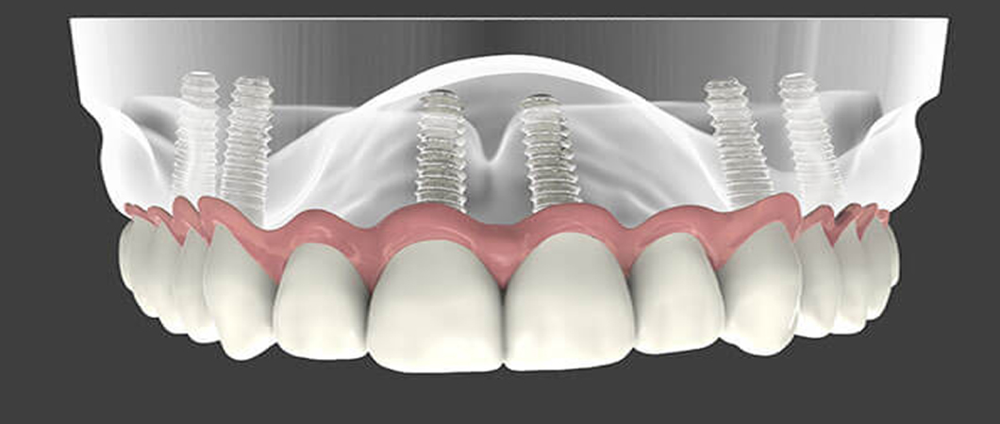
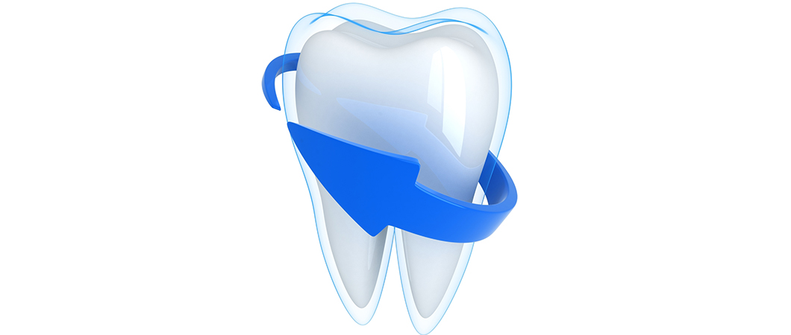

Dental Publications
This article explains the latest dental treatment techniques, and the most successful preventive measures for enjoying strong healthy teeth, in addition to dental implants, dental bridges, orthodontics, and other miscellaneous information

Dental implant step by step procedure in turkey
Table of Content
what is dental implant surgery?
Dental implant: It is the implant of an artificial root in the jawbones to restore the aesthetic appearance, in addition to the function of the jaws and missing tooth.
The artificial root is made of titanium, which is a living tissue friendly material, it can last throughout a person’s life without causing any problem.
Dental implant is considered one of the most advanced technologies in the field of dentistry, where the artificial tooth performs the function of the original tooth without a difference, and dental implant is also the ideal alternative to dentures and bridges that may cause discomfort feeling in mouth if they are not appropriate, for example, this method provided a suitable solution for those who do not have natural teeth to use for bridges or dentures.

The performance of this procedure depends on the nature of the implant and the condition of jawbones and may include several sessions.
One of the most important benefits of dental implants is the fixed structure for the new tooth, tooth root implant is followed by complete bones healing around it in the jaw, and this process may take a long time, sometimes up to a few months.
The dental implant is done through a simple surgery within the gum bones, where it forms a strong root for the artificial tooth.
The titanium material is one of the strongest and lightest materials as it is fully compatible with the jawbones, its non-slippery or moveable from its place nor cause harm for jawbones, unlike bridges and dentures.
Moreover, the prosthodontic implant cannot decay like natural teeth, especially if the bridge is built on it.
Our Medical Service : Dental Treatment in Turkey
- Jawbones have reached puberty and have stopped growing.
- Jawbones are strong to hold the implanted post, or you are able to receive a bone graft.
- Healthy oral tissues.
- No health problems that affect bone healing in the jaws.
- Unable or unwilling to fix teeth or bridges.
- Improving your speech.
- Ready to stick to the treatment plan.
what are the negative effects of dental implants?
Like any procedure, a dental implant can be surrounded by some risks, which are rare problems in general, and when they occur, they are simple and possible to treat, and they include:
- Inflammation in place of the implant.
- Injury or damage to neighboring teeth.
- Nerve damage that can cause pain, or numbness in the lips, gums, or chin.
- Sinus problems in the case of upper dental implants.
Before dental implant surgery
For dental implant in Turkey, you must go through a full assessment to prepare you for the procedure because dental implant consists of one or more procedures, including:
- Comprehensive dental examination, using x-rays and 3D imaging to create a complete model of your teeth and jaws.
- Reviewing your health history, you should inform your doctor of any health problems you went through or any medicines you take, as well as nutritional supplements and herbs.
- Report about heart disease, diabetes or previous bone operations.
- The doctor may give you an antibiotic for several days before the operation to avoid infections.
Dental implant procedure
The treatment plan is determined by the health condition of your jaw and teeth, in addition to several factors, including the number of missing teeth and the general condition of the jaw bones and remaining teeth.
Dental implant step by step procedure
The dental implant is an outpatient procedure, it does not require an inpatient stay, it is carried out in phases, and requires time for bone healing between different stages, the implant process includes several steps:
- Removing damaged tooth bone.
- Preparing jawbones and sometimes grafting bone tissue to the jaw.
- Implant of the post in the jaw.
- Waiting for bone growth and healing around the implanted area.
- Fixing the abutment in order to attach the artificial tooth.
- Artificial tooth fitting.
A dental implant may generally take more than a month, and most of this time pass while waiting for the bone to heal and grow, depending on the materials used, and sometimes several steps are combined in one session.
Therefore, some people take advantage of the dental implant in Turkey by making tours until the end of the treatment.
Read more : What are gum diseases?
Reasons for dental bone graft
If jawbones are thin or soft, you will need to graft bone tissue to the jaw before dental implant because chewing the food involves good strength and pressure on the implant part. If the jawbone is not thick enough, it can cause implant failure, so perhaps a graft of bone tissue is required to strengthen the foundation for the dental implant.
It may take a while for the bone tissue growth to reach the strength required for supporting the foundation of the implant, and sometimes you will only need to add a small amount of bone tissue, which can be done during the dental implant session, and this depends on the general condition of the jaw bones and doctor’s evaluation.
Placing the dental implant
During the implant, the dentist will drill holes in the jawbones and implant the metal post deep inside the jawbones, this part will serve as the solid root of the tooth that will be fixed in next session, meanwhile, a temporary tooth will be fixed on the metal post to fill the gap.
Do dental implants promote bone growth?
Once the dental implant post is placed inside the jaw, osseointegration begins, during this process, the jaw bone unites with the surface of the dental implant post, this process may take time to form a solid base for the artificial tooth, just as roots do for your natural teeth.

Placing abutment dental implant
After osseointegration around the dental implant post is complete, you may need additional surgery to place the abutment — the piece where the crown will eventually attach. This minor surgery is typically done with local anesthesia in an outpatient setting.
In some cases, the abutment is attached to thedental implant post when the post is implanted. That means you won't need an extra surgical step. Because the abutment juts past the gumline, however, it's visible when you open your mouth — and it will be that way until your dentist completes the tooth prosthesis. Some people don't like this appearance and prefer to have the abutment placed in a separate procedure
After the abutment is placed, your gums must heal for about two weeks before the artificial tooth can be attached.
Read more : What is a veneer? - Why are veneers cheaper in Turkey?
After dental implant surgery
Whether you have dental implant surgery in one stage or multiple stages, you may experience some of the typical discomforts associated with any type of dental surgery, such as:
- Swelling of your gums and face
- Bruising of your skin and gums
- Pain at the implant site
- Minor bleeding
If you encounter some dental implant problems, we offer the following suggestions:
- You may need pain medications or antibiotics after dental implant surgery. If swelling, discomfort or any other problem gets worse in the days after surgery, contact your oral surgeon.
- After each stage of surgery, you may need to eat soft foods while the surgical site heals.
- Most dental implants are successful. Sometimes, however, the bone fails to fuse sufficiently to the metal implant. Smoking, for example, may contribute to implant failure and complications.
- If the bone fails to fuse sufficiently, the implant is removed, the bone is cleaned up, and you can try the procedure again in about three month
General guidelines for referring dental patients
You can help in the success of the procedure and maintain your natural teeth by following these tips:
- Practice excellent oral hygiene. Just as with your natural teeth, keep implants, artificial teeth and gum tissue clean. Specially designed brushes, such as an interdental brush that slides between teeth, can help clean the nooks and crannies around teeth, gums and metal posts.
- See your dentist regularly. Schedule dental checkups to ensure the health and proper functioning of your implants and follow the advice for professional cleanings.
- Avoid damaging habits. Don't chew hard items, such as ice and hard candy, which can break your crowns — or your natural teeth. Avoid tooth-staining tobacco and caffeine products. Get treatment if you grind your teeth.
We are pleased in Ilajak Medical to provide free consultations for all medical specialties and to serve you in everything related to medical tourism in Turkey, and we wish you health and wellness.
Ilajak Medical© | A passion for care
Question and answer about dental implants
Modern dental implants have been in use since the 1960s.
Below are the common types of dental implant materials used in making dental implants today. • Titanium dental implant materials - Made from metal, Titanium is regarded as the most common type of dental implant materials • Zirconia dental implant materials - In contrast to titanium, zirconia is a recent invention.
Yes. Dental implants may be removed to change the overall restorative strategy or the implant fails.
No, Dental implants are fixed in the bone just like natural teeth.
Dentists do following steps for dental implant: • Surgical incision to open gums and expose the bone. • Drill holes deep in bones where dental implant posts will be embedded. • Place abutment • Take Final Impression • Attach crown.
If you are looking for a good quality dental implant at affordable prices then Ilajak Medical in Istanbul should be at the top of your list.
The dental implant is a permanent teeth restoration procedure, with better esthetic, easier to maintain, not harmful to gums and bones, and longer life.
Dental implant improves your smile and may cause virtual facelift by restoring the vertical height that was reduced when your natural teeth were lost.
Yes, in comparison with other teeth restoration procedures dental implant is designed to replicate the shape and color of natural teeth.
Yes, an infection around the dental implant in a form of gum disease also known as peri-implantitis, may occur due to systemic or local causes like tobacco smoking, poor oral hygiene, diabetes, and immune diseases.
Source: wikipedia , healthdirect
Latest Articles, Health News, Clinical Research, and more.
Keratoconus and cataracts , symptoms and types
What is Keratoconus, How it looks and what are the symptoms? Also, find out Keratoconus’s types and stages , Learn more with ILAJAK Medical.
Best Spa Resorts with Medical Services clinics in Turkey.
In this article, we will learn about the importance of health resorts and the treatment services they offer and the top and famous health & medical resorts in Turkey
Zirconia teeth type and costs in Turkey 2021
Zirconia dental crowns and bridges are used to treat and protect the affected teeth due to decay or fractures, etc, In this article we will learn about the advantages and drawbacks of Zirconia Crowns and bridges
Benefits of porcelain teeth and costs in Turkey 2021
Porcelain crowns and veneers are used to strengthen and protect damaged teeth due to decay or cracks or any other reason. In this article, we will discover dental porcelain and its advantages and risks.